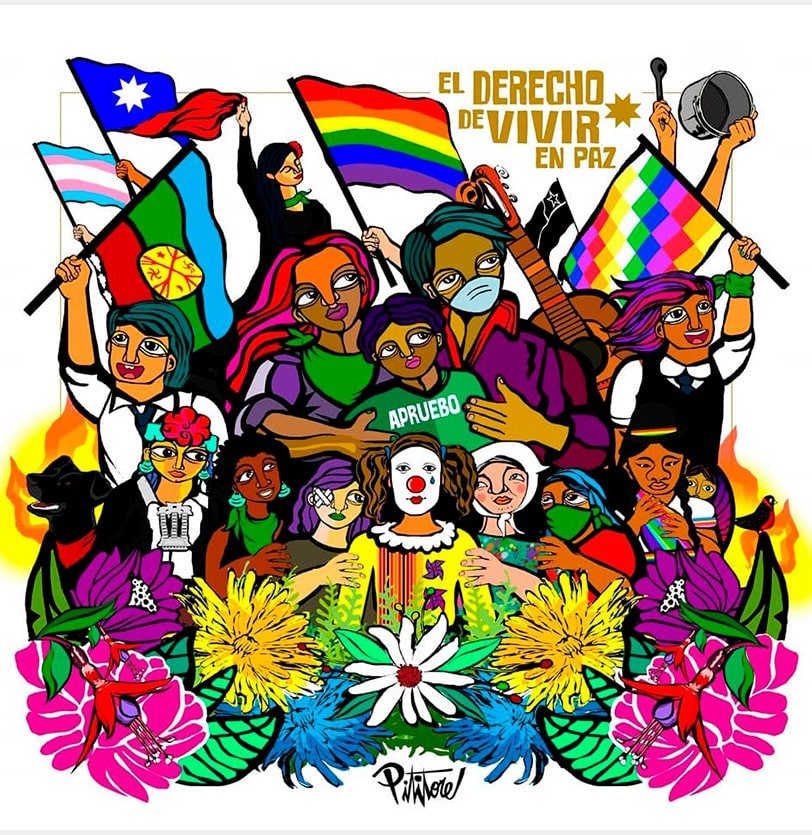

Las y los estudiantes de la escuela rural de Pucatrihue dibujaron su territorio. Foto: composición realizada por Giovanni Salazar de Agenda Propia.
Las y los estudiantes de la escuela rural de Pucatrihue dibujaron su territorio. Foto: composición realizada por Giovanni Salazar de Agenda Propia.
“Inchiñ peumatuayen, soñaremos”: Voces de la infancia Mapuche Huilliche en Pucatrihue sobre el proceso constituyente en Chile
El proceso constituyente en Chile iniciado a fines de 2019 les permitió a niños, niñas y adolescentes una posibilidad histórica de participación, reconocimiento y garantías de sus Derechos Humanos. En Pucatrihue, San Juan de la Costa, Fütawillimapu, gran territorio del Sur, estudiantes del pueblo indígena Mapuche Huilliche de la escuela rural comparten sus reflexiones sobre la nueva constitución que se votará el 4 de septiembre de 2022 y los problemas que deben enfrentar en el territorio dado el histórico proceso de colonización y despojo.
Por: Martina A.Paillacar Mutizábal.Es jueves, son las nueve de la mañana y suena la campana en la Escuela Rural de Pucatrihue, San Juan de la Costa, Fütawillimapu, gran territorio del Sur, Ngulumapu, Chile. Es pukem, invierno en chezüngun, el idioma huilliche y se oyen las risas, cantos y algarabía en la construcción de madera de un piso, pintada con murales de tonalidades azules. Los tonos se entremezclan con el celeste grisáceo del cielo y, a su vez, con el paisaje, frente a grandes cerros verde oscuro de bosque nativo de la cordillera de la Costa, donde habitan aves, monos de monte y pumas.
Niños, niñas y adolescentes de la Escuela Rural de Pucatrihue. Foto: Martina Paillacar M.
La escuela rural multigrado se ubica a orillas del camino que conduce a la caleta (porción de mar internado en la tierra y donde se encuentra el principal comercio en el territorio), bordeando al río Contaco que desemboca en el lafkenmapu, territorio marino y costero del océano pacífico. Esta es la última escuela, tras el cierre de otras dos por costos operacionales y escasa matrícula.
Son treinta y cuatro niñas, niños y adolescentes, veinte de ellas mujeres, de entre seis y doce años, de primero a sexto básico, en su mayoría del pueblo Mapuche Huilliche Lafkenche, que en este día conversarán sobre la nueva constitución y sus derechos. Muchas de ellas provienen de localidades cercanas, algunas llegan en furgón y otras deben viajar por transporte fluvial una hora para luego ser transportadas por el vehículo escolar.
Las y los estudiantes se sientan en una espaciosa y colorida sala, que en sus ventanales tiene una cortina de franjas con los colores de la wenüfoye, bandera Mapuche, que representa el cielo y la espiritualidad; la vida y la tierra; la sangre, memoria y lucha. Observan y escuchan al director de la escuela, Rodrigo Riquelme Muñoz, quien trabaja en la comuna desde hace doce años y quien cumple a su vez el rol de profesor, dado que se trata de una escuela unidocente, es decir, que cuenta con un único maestro que promueve el aprendizaje para todos los niveles de educación básica.
Durante la mañana, realizan un nxtvam, una conversación sobre sus preocupaciones respecto a su territorio y la nueva constitución. Las niñas y los niños dialogan sobre el proceso social y político que originó la creación de una Convención Constitucional, conformada por 155 constituyentes elegidos por la ciudadanía y que tuvo como objetivo la redacción de una propuesta de nueva constitución en Chile. En este proceso, los Pueblos Indígenas tuvieron fundamental participación, dado que hubo 17 escaños reservados para representantes de nueve pueblos indígenas.
Así, reflexionan sobre el estallido social que se vivió en Chile en 2019 y que se inició en la capital, Santiago, tras las movilizaciones de estudiantes secundarios dada el alza de los pasajes del metro, principal medio de movilización en la región. La consigna en ese entonces era: “No son 30 pesos, son 30 años”, aludiendo a los treinta años del “regreso a la democracia” tras la instauración del modelo neoliberal y la constitución política de los 80, implantada durante la dictadura cívico militar comandada por Augusto Pinochet.
Estudiantes junto al director de la Escuela, Rodrigo Riquelme, Escuela Rural de Pucatrihue. Foto: Martina Paillacar Mutizábal.
Las y los estudiantes comentan que se informaron del estallido social en la escuela, por los medios de comunicación –principalmente la radio– y gracias a conversaciones con sus familiares. Para ese entonces, en distintos territorios se realizaron masivas movilizaciones que exigían soluciones a demandas sociales, manifestaban el malestar colectivo respecto al modelo y las desigualdades e injusticias sociales, evidenciando una deslegitimación de la institucionalidad chilena. Asimismo, exigían el fin a la represión y a las violaciones sistemáticas de los Derechos Humanos que se denunciaban diariamente. Fueron meses de permanentes protestas que exigían la destitución presidencial de Sebastián Piñera, un cambio del paradigma basado en la economía de mercado, mientras ciertos sectores promovían la realización de una asamblea constituyente para solucionar los problemas que afectaban y aún hoy afectan a la ciudadanía.
“En la nueva constitución, todos los pueblos originarios estaremos incluidos. Queremos una educación digna y gratuita para las niñas y los niños, queremos una ciudad y un mundo mejor, que respete nuestros derechos”,dicen Martina, Dilan y Sebastián, tras dialogar en grupos de trabajo sobre los problemas que identifican en el territorio e imaginar cómo sueñan su futuro.
En tanto, Dayana, Fernanda, Gadiel y Magdalena comentan: “No queremos que contaminen ni que sobreexploten el mar, ni que talen más árboles en la cordillera. No nos gusta que contaminen los humedales ni que tiren basura a los ríos. Queremos que en la nueva constitución haya leyes que protejan nuestro leufu (río) y el lafken (mar) para que nuestras muchullas (familias) saquen y pesquen ricos mariscos”. Mientras conversan, con témperas, lápices, plastilina y telas, realizan dibujos de su territorio: el mar, cielo, animales y árboles predominan en sus ilustraciones.
La profesora Yanina Alcaide Pacheco, a cargo de la asignatura Lengua y Cultura Indígena, les acompaña cada jueves y les insta a conversar en chezüngun, mientras de fondo se oyen las brasas de la estufa que calienta la sala en esta nublada mañana, entre el canto de pájaros como los treiles, chucaos y pitíos, entre la brisa del viento y, a ratos, una suave llovizna. La temperatura promedio en la zona varía entre 0 a 12 grados aproximados en invierno. De fondo, se percibe levemente el susurro del lafken, el mar.
La educadora tradicional les saluda en chezügun, en la asignatura que desde el 2009 promueve la enseñanza de la cultura y los idiomas aymara, mapudungun, quechua y rapa nui en establecimientos educativos que tengan un 20% o más estudiantes de origen indígena. Si bien en la escuela son pocos los hablantes, se percibe la atenta escucha y la activa participación.
Las y los estudiantes provienen de familias que trabajan principalmente en la pesca artesanal, la recolección de mariscos y algas, la agricultura familiar, la producción de madera y carbón, la venta de comida y los trabajos de hogar. Para el Ministerio de Educación este grupo es considerado prioritario porque podría tener dificultades en enfrentar su proceso educativo dada la situación socioeconómica en sus hogares. Una vez que las niñas, los niños y adolescentes terminan sexto año básico en la escuela, deben migrar hacia otras localidades, en búsqueda de continuidad escolar.
En el territorio, y debido al proceso histórico de ocupación y despojo dada la colonización, deben enfrentarse a realidades como la pérdida de tierras (que actualmente son propiedad de particulares y grandes empresas forestales), a las condiciones de pobreza multidimensional, que abarca de forma simultánea carencias en distintas áreas como acceso a salud, educación, trabajo y seguridad social, entre otros; a la falta de conectividad, a la instalación de megaproyectos extractivos como las mineras e inmobiliarias y a la dispersión geográfica y al aislamiento. También se ven afectados por la baja escolaridad y deserción escolar, así como la precariedad laboral, la falta de empleo y de estabilidad laboral, la sequía y la falta de acceso a agua potable, a las adversas condiciones climáticas, a la discriminación, racismo, violencia institucionalizada y a la migración forzada.
Es por lo anterior que la escuela cumple un rol fundamental. Bien lo reafirma el director, quien comenta que buscan fortalecer los vínculos con la comunidad y brindar espacios de cooperación en distintas áreas, mucho más allá de la formación entregada en el aula. Ejemplo de ello son las reuniones y los talleres con la comunidad y la utilización de la infraestructura para la realización de rondas médicas. También, se hacen celebraciones tradicionales, como lo es el Wiñol Txipantv, la renovación del ciclo Mapuche que se inicia el solsticio de invierno, jornada que posterior a una ceremonia junto al mar, cuenta con ülkantvn, con la participación de estudiantes que cantan, bailan y declaman poesía, además hay kumeyeal, alimentación tradicional, en la que se comparten miltrines, la bebida muday, empanadas, sopaipillas y sopa.
Inchiñ peumatuayen: soñaremos
Caleta de Pucatrihue. En el lafken, desde la Rukakura, el sitio sagrado y espiritual para el pueblo Mapuche Williche, el taita Wenteyao, ser espiritual de gran importancia para el pueblo, restablece el equilibrio de la comunidad, brindando protección. Foto: Martina Paillacar Mutizábal.
En la entrada de la escuela, en el jardín, se aprecian los juegos infantiles y dos banderas: la wenüfoye, la bandera Mapuche con la iconografía de su pueblo en forma de estrella escalonada, y la bandera roja, blanca y azul de Chile.
Son dos salas con las que cuenta la escuela, más el comedor, que en sus paredes tiene colgados instrumentos musicales como el kull kull, kadkawillas, pifilkas y trutrukas. Ahí, un piano pintado con la obra “La noche estrellada” de Van Gogh se emplaza frente a una pared con weños y pali para practicar el palín, encuentro tradicional Mapuche con fines espirituales, deportivos y recreativos.
En la sala principal, en grupos de trabajo, reflexionan sobre los problemas que afectan a la localidad como la pobreza, el alza del costo de productos básicos de alimentación y la contaminación medioambiental, señalando también sus deseos de que en todas las escuelas del Fütawillimapu se enseñe la cultura e idioma huilliche. Conversan también sobre los efectos de la pandemia por la Covid-19 y cómo esta les afectó, en cuanto a las relaciones sociales y emocionales entre compañeros y compañeras, dado que por la emergencia sanitaria no tuvieron clases presenciales y no pudieron verse, jugar ni compartir.
“El mundo nos dio un regalo y lo estamos arruinando, estamos provocando la extinción de la tierra”, señalan los estudiantes Agustín y Gerson, al referirse a la contaminación medioambiental y que en la zona se ve reflejada principalmente a raíz de las plantaciones forestales de monocultivo como el pino y el eucaliptus.
“De nuestra mawida (espacio montañoso) sacamos lawen (remedio), la Ñuke Mapu es nuestra vida, nos da todo, hasta lawen si estamos enfermos, por eso hay que cuidarla y no sacar los árboles nativos. Hay que cuidar a los animales, proteger la tierra, la Ñuke Mapu (la naturaleza y biodiversidad)”, enfatizan Solange, Máximo y Adele.
Por su parte, Rayen, Florencia y Tamara destacan: “necesitamos un ambiente libre para vivir, por eso es importante que en la constitución se respeten nuestros derechos ancestrales”. A Magdalena, de 9 años, le gusta la poesía, jugar con sus perros, gatos y gallinas. Su familia trabaja en la venta de mercadería. Respecto al proceso constituyente, expresa: “Me gustaría que en la Constitución esté presente el derecho a la participación y que se respeten nuestros derechos indígenas. Cada niño y niña tiene una opinión diferente, por eso tienen que escucharnos”.
Dibujo de Magdalena, de 9 años, realizada por Rayén, compañera de la Escuela Rural de Pucatrihue.
Sebastián también tiene 9 años, es de Maicolpué y pertenece a la Comunidad Huilliche de Maicolpi. Le gusta jugar a la pelota y andar en bicicleta. Su familia trabaja en la venta de alimentos, en máquinas y en la venta esporádica de mariscos. “El adulto cree que porque ellos han vivido más tiempo en este mundo saben más cosas y tienen más derechos que los niños, pero no es así. Nosotros también tenemos derechos y nos damos cuenta de lo que está pasando”, comenta.
Benjamín, de 10 años, es del sector de Casa de Lata, Choroy Traiguén. Le gusta estar en la naturaleza, cuidar a sus ovejas y jugar fútbol. Su familia trabaja en un aserradero y en labores de hogar. Comenta que las opiniones de los niños y las niñas deben ser consideradas y que los derechos como a estudiar, jugar y el cuidado de la naturaleza deben estar presentes en la Constitución. “No me gustan las injusticias en Chile”, destaca.
Vanessa, de 11 años, de sexto año básico, vive en Caleta Manzano, le gusta jugar y compartir con su familia, quienes trabajan en la venta de leña y ropa. Así, comenta: “pocas veces se nos escucha, no se les da importancia a lo que decimos. A los niños y a las niñas hay que escucharles, ver qué piensan y necesitan y eso tiene que estar en la nueva constitución”.
Participación y consulta de niños, niñas y adolescentes en el proceso constitucional

Representación del derecho de vivir en paz, durante el estallido social en Chile. Foto: Ernesto Guerrero Celís, Pititore.
El estallido social en Chile a su vez, puso en evidencia problemas relacionados al modelo político-económico del país y que en Pucatrihue se ven reflejadas, según explica Rodrigo Riquelme, en la desigualdad social, la violencia e injusticia, en el desencanto con la política y gran empresariado, el despojo de los recursos naturales que por antonomasia el mundo Mapuche Huilliche siempre ha cuidado, como asimismo la postergación por parte del aparato estatal de las necesidades de las familias empobrecidas. Ante ello, la escuela se posiciona críticamente, promoviendo el fomento de los Derechos Humanos, el resguardo y reivindicación cultural, la valoración de la diversidad, la responsabilidad social y el desarrollo del pensamiento crítico.
Durante el estallido y posterior proceso constitucional iniciado con el “Acuerdo por la Paz y la nueva constitución”, niños, niñas y adolescentes participaron en las movilizaciones con motivo de aportar a la transformación social. En diversos territorios, entre los años 2020 y 2022, se llevaron a cabo iniciativas para promover la participación, defensa, reconocimiento y garantías de la infancia y la adolescencia como sujetos políticos activos, tutelares de derechos a ser garantizados en la nueva constitución. Distintas organizaciones promovieron la realización de talleres y conversatorios para conocer y visibilizar sus reflexiones, demandas e inquietudes respecto al proceso y resguardar sus derechos políticos, sociales, económicos y culturales. Dada la pandemia por coronavirus, estos procesos en su mayoría se realizaron en línea, dificultando la participación efectiva de niños, niñas y adolescentes indígenas que habitan localidades rurales, que no cuentan, en muchos casos, con acceso a internet. Una vez más, las políticas públicas estatales pertinentes culturalmente para la efectiva participación de la población indígena fueron insuficientes.
Sin embargo, la Convención Constitucional realizó un convenio con la Defensoría de la Niñez para facilitar la participación de niños, niñas y adolescentes y “formalizar las voluntades de trabajar en una nueva Constitución por, para y con ellos y ellas”. También se realizó la Consulta indígena para niños y niñas Aymara de entre 5 y 17 años “Jixt’asiñani Jiwasan Aru Arxatirisa”, Dibujemos Nuestros Derechos”, organizada por la Convención.
Rosa Catrileo junto a la asesora Paola Catricura, en Convención Constituyente: “En Chile se violan los DD.HH”. Foto: Rosa Catrileo A.
La abogada Mapuche, convencional constituyente, escaño reservado y coordinadora de la Comisión de Sistema Político, Rosa Catrileo Arias, comenta sobre los avances en materia constitucional respecto a los derechos de niños y niñas. “Hay un reconocimiento expreso del carácter de sujetos de derechos, avanzando de una mirada de objeto de protección a la mirada de titularidad de derechos humanos reforzada por las condiciones de desigualdad y exclusión en que se encuentran. Luego, se constitucionalizan importantes principios: el interés superior, la autonomía progresiva, el desarrollo integral, que permiten ratificar precisamente el carácter de sujetos titulares de derechos, que tienen que gozar considerando sus características especiales”.
Para el caso de la infancia indígena, Rosa asegura que también se incluyen en estos reconocimientos, “pero con la interseccionalidad al ser niños, niñas e indígenas, y en una interpretación armónica de la propuesta de nueva constitución, para el resguardo de sus derechos, debe considerarse su condición de infancia perteneciente a Pueblos Originarios, titulares de derechos distintivos, de manera que deben ser aplicados con la pertinencia cultural respectiva”. Esto implica, añade, que “para velar por los resguardos de los niños y niñas Mapuche se tendrá que considerar su condición de miembro de pueblo indígena para el respeto de sus derechos siendo la interculturalidad clave para ello. En la constitución se hace una referencia expresa a la obligación del Estado de prevenir la violencia y superar las desigualdades que afrontan las niñas rurales lo que necesariamente también se aplica a las niñas Mapuche cuya presencia en la ruralidad es obvia”.
“Como sabemos, los niños y las niñas han sido víctimas de violencia estatal y la propuesta de nueva constitución se hace cargo de ello y se establece como derecho el ser protegidos contra toda forma de violencia incluída la que proviene del Estado, fortaleciendo un estatuto protector de la infancia que alcanza a la Mapuche”, Rosa Catrileo, convencional constituyente.
Otras iniciativas realizadas con motivo de promover la participación respecto al proceso constituyente de niños y niñas fueron las realizadas por la Defensoría de la Niñez y su proyecto “Mi Voz en la Constitución”, que buscó “incidir en el reconocimiento, respeto, promoción, difusión y protección de los derechos humanos de niños, niñas y adolescentes en la generación de una nueva Constitución Política de la República, considerando su participación efectiva”.
También se realizaron cabildos o reuniones comunales, algunos de ellos organizados por universidades, como la de Chile e Infancias FACSO, que lanzaron la guía “Voces Constituyentes, metodologías con niños, niñas y adolescentes para el proceso constituyente”.
En tanto, la Unidad de Estudios Aplicados de la Escuela de Antropología de la Universidad Católica, el Centro de Estudios Interculturales e Indígenas (CIIR), el Centro de Justicia Educacional PUC, UNESCO con el apoyo de UNICEF y los Centros de Creación CECREA, realizaron el estudio “Voces de Niños, Niñas y Adolescentes para el proceso constituyente” que culminó con la publicación de un libro del mismo nombre y que contó con talleres y la participación en línea de niños, niñas y adolescentes que expusieron ante varias comisiones de la Convención. Al respecto, Rosario Palacios, investigadora, periodista y socióloga, señala que “hay un abandono por parte de la sociedad hacia la niñez y adolescencia, por tanto, pusimos a disposición una serie de talleres didácticos en línea para promover su participación, asimismo diseñamos una metodología de participación efectiva por medio de distintas herramientas como conversaciones, dibujos y creaciones en papel, que son procesos y espacios que requieren de lazos profundos de confianza”. Como la participación de niños, niñas y adolescentes en este tipo de escenarios suele no ser vinculante, el que estas comisiones de la Convención les hayan escuchado fue relevante.
Sobre la escasa consulta y participación de niños, niñas y adolescentes indígenas de localidades rurales, Rosario comenta: “en la escuela de Rapa Nui hicimos un taller, sin embargo, incorporar a los niños y a las niñas de localidades rurales es un desafío y un trabajo por realizar, ya que muchas veces se dejan de lado y con ello se excluyen otras visiones de mundo, lo que tiene consecuencias prácticas y metodológicas. Como Violeta Parra que iba a los lugares, así, como sociedad debemos ir y conocer sus visiones”.
La propuesta de la nueva constitución postula que el Estado es plurilingüe, que los pueblos y naciones indígenas son preexistentes y titulares de derechos, así, sus miembros, en virtud de su libre determinación, tienen derecho al pleno ejercicio de sus derechos individuales y colectivos. Será el Estado quien, mediante distintos mecanismos de participación, deberá promover el ejercicio activo y progresivo de los derechos de la ciudadanía, en especial en favor de niños, niñas y adolescentes. Así, menciona que niños y niñas son titulares de todos los derechos y garantías establecidas en la Constitución y en los tratados internacionales vigentes ratificados por Chile, por tanto, el Estado tendrá el deber prioritario de “promover, respetar y garantizar sus derechos resguardando su interés superior, su autonomía progresiva, su desarrollo integral y su derecho a ser escuchados y a participar e influir en todos los asuntos que les afecten, en el grado que corresponda a su nivel de desarrollo en la vida familiar, comunitaria y social”.
De la misma forma, señala que la Ley deberá crear “un sistema de protección integral de garantías de los derechos de niñas, niños y adolescentes, a través del cual establecerá responsabilidades específicas de los poderes y órganos del Estado, su deber de trabajo intersectorial y coordinado para asegurar la prevención de la violencia en su contra y la promoción y protección efectiva de sus derechos”.
El 4 de septiembre de 2022 se realizará una consulta constitucional nacional y obligatoria, llamada “plebiscito de salida”, con motivo de aprobar o rechazar la nueva constitución. A pesar de que se promovieron iniciativas para que adolescentes de 16 y 17 años puedan participar en su votación, estas finalmente no prosperaron.
De ser aprobada la nueva constitución, por primera vez en la historia de Chile, los derechos de niños, niñas y adolescentes estarán constitucionalmente reconocidos, consagrados y protegidos.
Son las 16:15 horas y suena la campana en la escuela de Pucatrihue, esta vez, anunciando el fin de la jornada escolar. La educadora tradicional invita al curso a hacer meli afafan, cuatro exclamaciones reivindicativas, por tanto, Benjamín grita: “Kiñe, epu, kula” (uno, dos, tres) y luego, el curso entero, con las manos levantadas y empuñadas, exclama en cuatro ocasiones, llenos de newen, con fuerza y energía, para luego cerrar la jornada aclamando: “¡Marrichiwew!”, “¡diez veces venceremos!”
Con entusiasmo preparan sus mochilas, se abrigan con chaquetas, gorros y bufandas, mientras algunos se abrazan antes de subir al transporte escolar rumbo a sus hogares. Las más pequeñas, serán ayudadas por sus compañeras mayores.
“¿Y ustedes qué creen, preguntan Magdalena y Sebastián, con sus curiosos ojos cafés colmados de inquietudes y anhelos, se aprobará o se rechazará la nueva constitución?”
Nota. Esta historia hace parte de la serie periodística Dibujando mi realidad, #NiñezIndígena en América Latina, cocreada con niños, niñas, periodistas y comunicadores indígenas y no indígenas de la Red Tejiendo Historias (Rede Tecendo Histórias), bajo la coordinación editorial del medio independiente Agenda Propia.